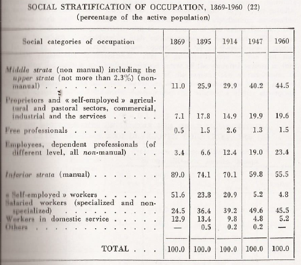
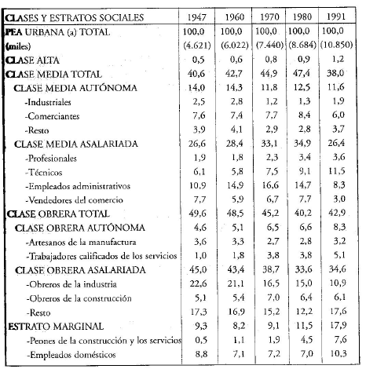
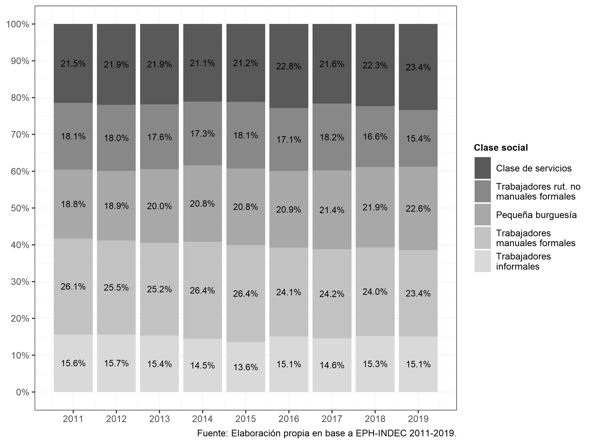

Uno de los primeros elementos a resaltar en el estudio de la dinámica temporal es que el tiempo social es distinta a la del tiempo cronológico. Mientras que este último es lineal, continuo y homogéneo, el tiempo social es diferencial, heterogéneo y discontinuo (Osorio, 2001, pp 46). En ciencias sociales el tiempo es clasificado, caracterizado y recortado en función de los procesos que acontecen. En este sentido, comúnmente hablamos de corto, medio y largo plazo. Mientras que el tiempo corto son breves y concentrados, en el tiempo medio y largo, los mismos se presentan en forma dilatada (Osorio, 2001, pp 49).
La elección de que unidad temporal analizar será consecuencia no sólo de los objetivos de investigación, sino también del proceso social que se desea investigar. Por ejemplo, los estudios de estructura de clases o de movilidad social inter o intrageneracional, rara vez son analizados a partir de períodos cortos (uno o dos años), ya que los cambios estructurales suelen producirse en forma lenta y paulatina. Vale el ejemplo de los procesos de transformación en la estructura social a partir la migración del campo a las ciudades o de los cambios producidos a partir de la instauración de un modelo de acumulación basado en la valorización financiera.
Esto no significa que no podamos estudiar la estructura de clases en el corto plazo. En momentos en los que se producen cambios profundos en forma rápida, como por ejemplo una pandemia o un proceso hiperinflacionario, un análisis del corto plazo puede brindarnos mucha información acerca de cómo el impacto pudo haberse producido en forma diferencial por clase social.
El estudio del cambio de la estructura de clases a través del tiempo fue una de las principales preocupaciones de los primeros trabajos sobre la temática realizados en Argentina. En este sentido, Gino Germani, pionero no sólo de la institucionalización de la sociología en el país sino en el estudio de la estructura social, en su principal obra, Estructura social de la Argentina (1955), aborda los cambios producidos en las clases sociales a partir de la información censal disponible desde el censo de 1895.
Gráfico 8.1: Evolución de la estratificación social. 1869-1960. Germani (1971)
Dicho trabajo fue continuado por Susana Torrado en su libro Estructura social de la Argentina, 1945-1983 (1992), aunque aplicando el esquema de clases construido por la autora. Luego, fueron incorporados los censos de 1980 a 2010 por Sacco (2019), recontruyendo el esquema de clases de Torrado.
Gráfico 8.2: Evolución de la estructura de clases. Total país 1947-1991. Torrado (2007)
En otros trabajos se ha optado por el estudio de los cambios producidos en la estructura de clases pero en el mediano plazo. Para ello se ha recurrido fundamentalmente a la EPH, dado su carácter de relevamiento continuo y el tipo de variables socio-ocupacionales que contiene. De este modo podemos citar los trabajos de Benza (2016), Chávez Molina & Sacco (2015), Pla et al. (2018), Sacco (2019) o Chávez Molina & Rodríguez de la Fuente (2021).
Gráfico 8.3: Evolución de la estructura de clases. Total país 2011-2019. Chávez Molina & Rodríguez de la Fuente (2021)
Ahora veremos como llevar a cabo un análisis de clase a lo largo de un período. El estudio puede abordarse desde varias aristas. Podemos analizar como ha evolucionado la estructura de clases en su tamaño y/o composición o cómo ha evolucionado respecto a alguna variable dependiente (ingresos, riqueza, características habitacionales, etc.), por ejemplo. Puntualmente la evolución de las clases sociales entre 2011 y 2015, tomando como fuente de información a la EPH. A los fines de simplificar el ejemplo, trabajaremos únicamente con la población ocupada correspondiente a los segundos trimestres.
Para ello, tal como hemos visto en el Capítulo 2, descargaremos las bases utilizando el paquete eph, con su función get_microdata.
eph_1115 <- get_microdata(year = 2011:2015, trimester = 2, type = "individual")
eph_1115 <- eph_1115 %>%
select(microdata) %>%
unnest(cols = c(microdata))Como puede verse ahora contamos con una base de 333.819 casos y con información para los seis años seleccionados.
nrow(eph_1115)[1] 292198table(eph_1115$ANO4)
2011 2012 2013 2014 2015
58726 56915 55417 61112 60028 Descargadas y pegadas las bases, utilizaremos el código de ejemplo presentado en el Capítulo 5.3 para operacionalizar el esquema de clases. Al ser un código largo, sólo lo aplicaremos sobre la base sin mostrar el script. Luego de seleccionar únicamente a los individuos ocupados, realizaremos una distribución de frecuencias de la clase social con el total de los casos para comprobar si la operacionalización funcionó.
eph_1115_ocup <- eph_1115 %>%
filter(ESTADO == 1)
summarytools::freq(eph_1115_ocup$clase6_factor, weights = eph_1115_ocup$PONDERA, justify = "center", cumul = FALSE)Weighted Frequencies
eph_1115_ocup$clase6_factor
Type: Factor
Weights: PONDERA
Freq % Valid % Total
-------------------------------------------- ------------- --------- ---------
Clase alta 429662.00 0.79 0.78
Clase media - autónoma 7178247.00 13.19 13.11
Clase media - asalariada 20140492.00 37.02 36.77
Clase obrera - autónoma 5064586.00 9.31 9.25
Clase obrera - asalariada 17593697.00 32.34 32.12
Clase obrera - trabajadores marginales 3995731.00 7.34 7.30
<NA> 368788.00 0.67
Total 54771203.00 100.00 100.00 Finalmente ya estamos en condiciones de construir una nueva tabla (no mostrsada en la salida) en donde podamos cruzar la variable de clase social (clase6_factor) con la variable año (ANO4). Para ello, utilizaremos algunas de las herramientas del paquete dplyr. En primer lugar filtraremos aquellos casos perdidos (NA) para la variable de clase. Luego agruparemos los datos por año y clase (group_by) y contabilizaremos los casos (tally). Es importante notar que lo que sumamos son los casos brindados por la variable PONDERA, por eso es necesario declarar al ponderador a través del wt = PONDERA. Ya con las frecuencias absolutas por clase y año calculadas es posible llegar a los porcentajes. De este modo, volveremos a agrupar los datos por año y crearemos una nueva variable (mutate) que divida a cada frecuencia por su sumatoria total (n/sum(n)) y la multiplique por 100. Para hacer más fácil la lectura, dejaremos únicamente dos decimales. Finalmente para pasar de un formato largo de tabla a uno ancho, aplicaremos la función spread.
tabla_anios <- eph_1115_ocup %>%
filter(!is.na(clase6_factor)) %>%
group_by(ANO4, clase6_factor) %>%
tally(wt=PONDERA) %>%
group_by(ANO4) %>%
mutate(percent = round((n/sum(n))*100, digits = 2)) %>%
select(clase6_factor, ANO4, percent) %>%
spread(ANO4, value = percent)Es necesario aclarar que hay muchas formas de construir una tabla de doble entrada, así como de configurarla. Para ver otras opciones recomendamos explorar los paquetes janitor y summarytools.
Otra opción de presentación es la elaboración de un gráfico de barras. Para ello recurriremos al paquete ggplot2 y a la función geom_col. En este caso, al principio, repetiremos parte de la secuencia de pasos utilizada para el armado de la tabla, hasta la generación de la variable percent. Luego llamando a la librería ggplot2, definiremos la estética (aes) indicando el eje x (años), el eje y (porcentajes) y la variable que determinará el color de las barras (fill), es decir, la clase social. Posteriormente llamaremos a la función geom_col() y luego a geom_text para identificar con números los porcentajes en las barras. El resto de las opciones mejoran la salida gráfica configurando diversos aspectos.
eph_1115_ocup %>%
filter(!is.na(clase6_factor)) %>%
group_by(ANO4, clase6_factor) %>%
tally(wt=PONDERA) %>%
group_by(ANO4) %>%
mutate(percent = round((n/sum(n))*100, digits = 2)) %>%
ggplot(mapping = aes(x = ANO4, y = percent, fill = clase6_factor)) +
geom_col() +
geom_text(aes(label = percent), position = position_stack(.5), size = 3) +
scale_fill_discrete(labels = function(x) str_wrap(x, width = 25)) +
labs(title = "Evolución de la estructura de clases sociales",
subtitle = "Población ocupada. Argentina urbana 2011-2015.",
caption = "Fuente: Elaboración propia en base a EPH-INDEC 2011-2015.",
fill = "Clase social") +
theme(legend.title = element_text(size = 10, face = "bold"),
legend.text = element_text(size = 10),
axis.title.x = element_blank(),
axis.title.y = element_blank(),
axis.text.y = element_text(size = 10),
axis.text.x = element_text(size = 10),
plot.title = element_text(size = 12, face = "bold"),
plot.subtitle = element_text(size = 11),
plot.caption = element_text(size = 10, hjust = 1)) +
scale_x_continuous(breaks = c(2011:2015)) +
scale_y_continuous(breaks=seq(0, 100, 10))Gráfico 8.4: Ejemplo de gráfico de columnas con la variable clase social